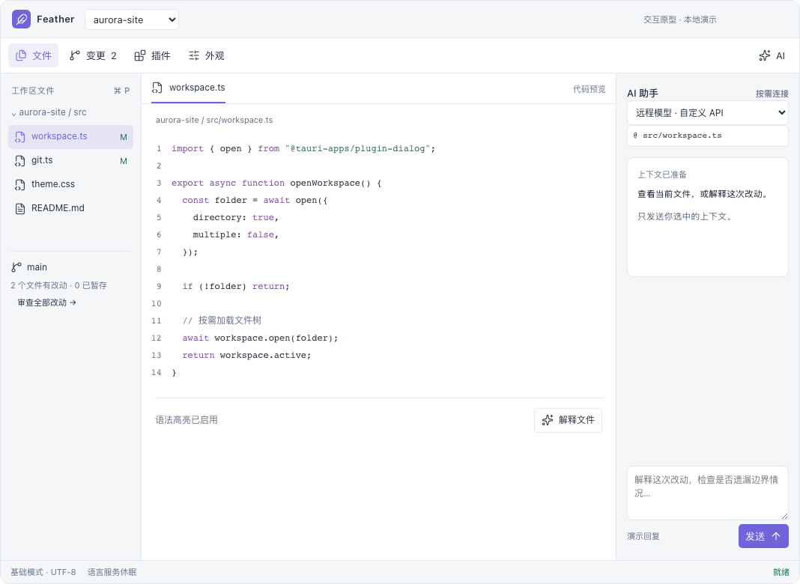
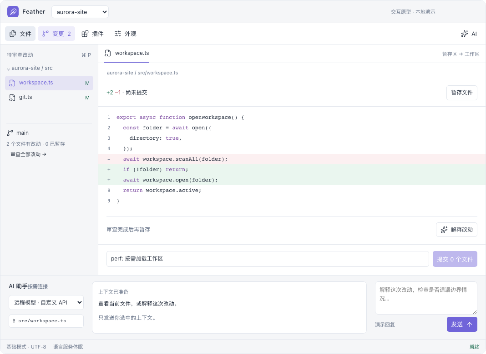

轻量代码工作台
技术选型、实现方案与初期原型
面向“AI 写代码，人看代码、审查改动、管理 Git”的桌面工作流。
本报告基于官方文档及项目仓库核验。未安装竞品做同机性能测试；性能数值分清“项目宣传值”与“建议验收目标”。原型为交互演示，不调用 AI、不操作真实文件或 Git。
1. 选型结论
自研首选：Tauri 2 + Rust + SolidJS / TypeScript + CodeMirror 6。产品核心是工作区、代码阅读、Git 审查与可选 AI；高级编辑能力由插件补齐。
先验证现成工具：Zed 与 Pragtical。Zed 用于验证开箱体验；Pragtical 用于验证轻量、深度可改和插件组合。若现成方案满足实际工作流，自研收益主要剩下专属 UI 与插件产品化。
你的七项需求可以同时实现，但要明确两个边界：“模块化”需要按需激活与释放资源；“mini VS Code”首期应指功能组合，而非完整兼容 VS Code 扩展 API。后者会引入扩展宿主、服务桥接、运行时依赖和持续兼容成本。
Tauri 的优势是使用系统 WebView，不随应用分发整套 Chromium。它仍有 WebView 内容、渲染等进程，不能直接推导出固定内存上限。结合你的几百 MB 预算与 UI 要求，Web UI 路线更平衡。Tauri 进程模型
| 目标 | 建议 | 决定因素 |
|---|---|---|
| 立即替换日常工具 | Zed 与 Pragtical 各试一个真实项目 | 审查改动是否顺手；实际总内存；AI 接入体验 |
| 做可高度定制的个人工作台 | Tauri + CodeMirror，自定义插件 API | UI 自由、开发效率、按需功能与资源预算 |
| 未来必须兼容现有 VS Code 扩展 | 重新评估 Theia / Code - OSS 路线 | 扩展兼容优先级高于极限轻量 |
| 未来改为常态低于 100 MB | 优先验证 Pragtical / Lite XL；原生 Rust 作为备选 | WebView 基线可能不适合此硬约束，需先实测 |
2. 七项需求对应的产品与工程边界
| 需求 | 首期必须交付 | 实现重点 |
|---|---|---|
| 轻量、快、低占用 | 启动快；空闲停止计算；核心模式可用 | 单主窗口、按需语言包、有限文档缓存、服务生命周期 |
| 工作区 → 树 → 代码 | 最近工作区、目录展开、标签页、高亮、查找、基础保存 | 目录按层读取；虚拟列表；文档模型独立于 UI |
| 默认 Git | 状态、diff、暂存/取消暂存、提交、分支信息、fetch/pull/push | 内置模块调用 Git CLI；单仓库写操作排队 |
| 可接 AI | 自定义服务地址、模型、凭据；上下文选择；流式回复与取消 | 模型 API 与 ACP 分两条适配路径 |
| 高度定制 UI | 主题、字体、密度、面板位置、显示/隐藏、布局预设 | 设计变量 + 布局状态 + 稳定扩展插槽 |
| 插件组成 mini VS Code | 内置功能模块化；主题扩展；一条真实运行时插件链路 | manifest、激活事件、宿主 API、卸载清理 |
| macOS / Windows | 两个系统原生安装包与真实验收 | WebKit / WebView2 差异；输入法；路径；Git 凭据；签名 |
建议默认模式：文件浏览、语法高亮、全文搜索、Git 面板始终可用。AI 面板可以展示，但未开始会话时不启动 Agent。LSP、终端、格式化服务、调试器默认不启动。
“已安装、已启用、正在运行”分开显示。插件安装在磁盘上不等于占用运行内存；隐藏面板也不等于进程退出。关闭工作区时，应回收该工作区的 watcher、搜索任务、语言服务和 Agent 会话资源。
第一版先做一个本地仓库的完整闭环。多根工作区、多个仓库、远程开发、断点调试和完整扩展市场进入后续阶段。保留少量编辑能力：AI 改错时能直接修一行，再返回审查流程。
3. 已有类似工具：哪些值得实际试用
下面比较“满足需求的路径”，不提供未经同机测量的 RAM 排名。默认 Git 要区分状态标识、完整提交操作和外置客户端三种能力。
| 工具 | 文件 / Git / AI | 插件与 UI | 适配判断 |
|---|---|---|---|
| Zed | 项目文件、完整 Git 面板与差异审查；模型服务、外部 ACP Agent | 主题、键位、面板可配置；扩展能力集中在语言、调试器、主题、代码片段、MCP 等 | 最值得先试的开箱候选；不等于任意 UI 插件平台 |
| Pragtical | 轻量编辑底座；SCM 插件覆盖完整 Git 工作流；Assistant 可连接多类模型与 Agent | C / Lua / SDL；Lua 与 C API 可深度扩展 | 最接近“可组装轻量底座”；Assistant 尚在开发中 |
| Lite XL | 代码编辑、项目文件；Git 等通过插件组合；AI 需另选插件或自行接入 | C + Lua，核心可改，插件简单 | 低占用基线与架构参考；整合体验需要投入 |
| Sublime Text | 成熟编辑体验；默认 Git 状态、diff 标记；完整 Git 由插件或 Sublime Merge 补齐 | Python 插件与 JSON 主题；不能按 Web 应用方式任意重构整个界面 | 适合轻量阅读与偶尔编辑；一体 AI/Git 工作台需组合 |
| Lapce | Rust 原生编辑器，Tree-sitter、LSP、终端；Git/AI 的目标流程需针对版本验证 | Floem UI，WASI 插件；编辑器式扩展底座 | 值得参考实现；不作为无需验证的开箱答案 |
| Neovim / GUI 前端 | 语法、LSP、终端；文件树、Git、AI 工作流依赖具体配置 | Lua / RPC 生态强；GUI 外观受前端实现约束 | 适合愿意维护配置、接受 Vim 交互的人；与你的少写代码诉求匹配度较低 |
| Theia / Code - OSS 派生 | 更接近完整 IDE 与 VS Code 插件生态 | 产品级改造能力强；要承担既有平台与扩展宿主 | 当扩展兼容成为硬要求时考虑；轻量优先时不先选 |
平台核验：Zed、Pragtical、Lite XL、Sublime Text、Lapce 均有 macOS / Windows 路径。Neovim 须同时选定 GUI 或终端宿主；整套方案一起测资源。
Zed：开箱最完整，但扩展边界明确
Zed 已有 Windows 正式版本；内置 Git 支持文件/块暂存、差异、历史与远端同步。官方扩展文档列出的能力不包含通用的任意工作台 UI 注入。因此它适合直接用，但不能把“装扩展”当成“重新设计整个产品”的承诺。Windows 官方页 · Git 文档 · 扩展 API 范围
Zed 的外部 Agent 通过 ACP 接入，独立拥有运行时与认证。若采用它，先关掉不需要的服务，用自己的仓库测“只看代码”和“Agent 工作中”两个场景。Fork Zed 属于另一条路线：编辑器主要为 GPL-3.0-or-later，且需跟进上游工程。外部 Agent 文档 · 项目与许可证
Pragtical：本次调研最值得补充验证的候选
项目官网宣传约 50 MB RAM、约 10 MB 磁盘，支持三大桌面系统。这是项目宣传值，未公开在此处对应你的仓库、插件与 AI 场景，不能作为组合后的总内存保证。其 MIT 开源与 Lua/C 可扩展结构适合个人定制。Pragtical 官网
SCM 已有工作区/暂存区、逐块/逐行暂存、提交、历史、分支与同步；当前文档要求 Pragtical 3.14.0 及匹配的 widget 插件。Assistant 提供模型与 ACP 适配，但明确标注仍在开发中，部分提供方配置需要 Lua init 代码。应分别验证插件版本匹配、中文输入、外部文件变更与 Agent 编辑审查。SCM 说明 · Assistant 说明
建议试装组合：Pragtical + SCM + Assistant + 常用语言高亮；暂不加 LSP 和终端。稳定后再逐个添加扩展并记录资源增量。满足需求即可停在配置方案；如果聊天、审查与布局差距明显，再进入自研。
其余候选的核验依据
Lite XL 官方强调 C/Lua 与可脚本化；Sublime 官方把更完整 Git 管理交给 Sublime Merge；Lapce 官方确认 Floem、Tree-sitter、LSP、WASI 与双端构建；Neovim 官方提供嵌入与 RPC；Theia 支持 VS Code 扩展并公开 API 覆盖情况。Lite XL · Lite XL 插件 · Sublime Git · Sublime 主题 · Lapce · Neovim · Theia 扩展
4. 桌面技术栈：为什么首选 Tauri
选型判断以下适配结论由你的需求推导，属于工程判断，不是框架性能排行榜。
| 路线 | 适合本项目之处 | 成本与局限 | 结论 |
|---|---|---|---|
| Tauri 2 + Rust + Web UI | 系统 WebView；CSS/UI 生态；文件、进程、更新能力；双端共用前端 | 两种 Web 引擎；Rust 与 JS 边界；产品插件系统仍须自建 | 首选 |
| Wails + Go + Web UI | 同样利用系统 WebView；熟悉 Go 时更易开发本地服务 | 也要自建编辑器与运行时扩展系统；不因换 Go 自动得到更低内存 | Go 团队的同级备选 |
| Rust + GPUI / Floem | 避免 WebView；可完整控制绘制、数据与资源生命周期 | 编辑器输入、布局、无障碍、中文输入和插件 UI 都更费工；GPU 路线也要计显存/共享内存 | 性能预算不达标时再评估 |
| Electron + Web UI | 跨端渲染一致性；Node 生态；复杂桌面集成经验丰富 | Chromium 与 Node 运行体系；与“尽量降低常驻开销”目标存在张力 | 扩展兼容、开发速度优先才选 |
| Neutralinojs + Web UI | 小型 WebView 宿主；可用外部进程扩展 | 复杂 Git/Agent/插件生命周期仍需建设；不能仅按空壳体积选底座 | 简单工具可用，本项目不优先 |
| Theia 定制 | 工作台、扩展宿主、VS Code API 兼容机制已有基础 | 引入完整 IDE 平台；功能裁剪不代表运行成本线性减少 | 兼容生态成为硬条件时选 |
官方依据：Tauri 进程与 WebView · Wails · GPUI · Lapce / Floem · Electron 进程模型 · Neutralino 架构 · Theia
推荐落地组合
| 层 | 选择 | 选择原因 |
|---|---|---|
| 桌面壳 | Tauri 2，单主窗口 | 本地能力与 UI 分离，先控制窗口/WebView 数量 |
| 界面 | SolidJS + TypeScript + Vite；CSS 变量与少量自建组件 | 适合文件树、选中状态、流式 AI 等局部更新；不引入整套管理后台组件库 |
| 代码显示/编辑 | CodeMirror 6；语言包动态导入 | 模块组合、现成编辑行为；初期无需重造文本引擎 |
| 本地服务 | Rust + 异步任务；文件监听、Git、搜索、进程管理 | 阻塞 I/O 与计算离开 UI；协议返回结构化结果 |
| 检索 | ripgrep 子进程；文件名索引按需构建 | 先覆盖路径/文本搜索；暂不建设常驻向量数据库 |
| Git | Git CLI | 复用用户凭据、配置、hooks、签名与已有行为 |
| 配置 | JSON / JSONC；会话日志按文件保存 | 易迁移、可 diff；查询需求变复杂后再引入 SQLite |
| AI | Rust 网络适配器 + ACP 子进程适配器 | 同一 UI 支持模型调用与现有 coding agent |
| 扩展 | 首期声明式资源 + 按需 QuickJS 宿主验证 | JS/TS 作者易参与；不把 Node 运行时作为默认依赖 |
Solid 的细粒度更新适合此类界面，但不是达成 RAM 目标的决定因素；如果你熟悉 React 或 Svelte，沿用熟悉方案通常更划算。文档缓存、LSP、插件与 Agent 进程往往更值得先管。Solid 响应式文档
5. 编辑器引擎：CodeMirror 6 优先，Monaco 备用
| 方案 | 优势 | 本项目中的限制 | 建议 |
|---|---|---|---|
| CodeMirror 6 | 模块化；视口渲染；状态、命令、语言可组合；主题容易融入产品 | 工作台、Git、LSP 管理须自己接；高级 IDE 体验仍要建设 | 默认引擎 |
| Monaco | 贴近 VS Code 编辑体验；成熟 diff 与语言服务接口 | 必须管理 model/worker 生命周期；不包含 VS Code 文件树或扩展宿主 | 重度编辑需求出现再比较 |
| 原生文本引擎 | 渲染与存储控制更完整 | 输入法、撤销、选区、双向文字、大文件等成本集中出现 | 首期不自造 |
CodeMirror 文档明确采用独立模块与视口渲染；大文档不会全部渲染为 DOM，但文档状态仍占内存。Monaco 官方 FAQ 明确：VS Code 扩展不能直接在 Monaco 中运行。CodeMirror 架构 · Monaco FAQ
高亮、编辑与语言智能拆开
- 基础高亮：先用 CodeMirror 对应语言包。JS/TS、JSON、CSS、HTML、Markdown 优先；打开文件时加载。
- 语义能力：LSP 作为可选模块。只有启用补全/诊断/跳转并打开对应语言后，才启动该语言服务。
- 不要默认叠加解析器：已经用语言包满足高亮时，不额外常驻 Tree-sitter 与另一套高亮引擎。需要跨语言结构查询，再评估 Tree-sitter。
- 差异：评估
@codemirror/merge的展示能力；Git 暂存补丁必须由 Git 服务计算/验证，不能仅根据屏幕 diff 直接拼接。 - 编辑保存：CodeMirror 文档为当前编辑状态；保存时由 Rust 检查磁盘版本再写入。Rust 不维护每次按键同步的第二份完整字符串。
初始大文件策略建议：普通源码正常编辑；超过约 10 MB 或出现极长单行时，先停语法解析、折叠与装饰；超过约 50 MB 转专用分块只读查看器。这些是待压测调整的阈值，不是 CodeMirror 保证值。只渲染视口不能解决全文加载和语法树占用。
编辑器适配层只封装已需要的能力：打开、关闭、选择、读取选区、应用 edit、切换只读、显示 diff。不要在首期为“随时切换任意引擎”设计庞大抽象层。
6. 工作区、文件树、Git：详细实现路径
工作区与文件树
工作区配置保存根目录、最近打开文件、折叠状态和布局。首期一根目录，数据结构保留多个 root 的可能。打开工作区只读取顶层；展开目录再请求子项。文件树按行虚拟化，Git 标识通过路径状态映射更新。
文件监听由 Rust 管理，合并短时间事件后通知 UI；分支切换、批量 checkout 或 Agent 连续写文件时，按批更新。.git 不作为普通文件树递归展开；依赖目录、构建输出按配置排除扫描。被忽略目录仍可由用户显式展开查看。
搜索通过 rg --json 输出结构化事件，按批返回并支持取消；不要一次把全部搜索结果塞进前端。文件名索引与内容搜索分开，首期不做全库常驻内容缓存。
文档与外部修改
- 打开：Rust 返回内容、编码、换行风格与版本标识；UI 建立文档。
- 编辑：变更留在编辑器模型；不让全局响应式 store 保存每次更新的全文副本。
- 外部修改：未修改的 buffer 可更新；有未保存改动时展示差异与选择，不能静默覆盖。
- 保存：核对磁盘版本，写入成功后更新基线；Windows 替换文件需专门处理文件占用与重命名行为。
- 关闭：释放视图、监听和临时 diff；未保存文本先保留恢复草稿，干净 buffer 进入有界缓存。
Git：先 CLI，后决定是否需要 libgit2 / gix
Rust 直接创建 Git 进程并传参数数组，避免拼接 shell 命令。首期沿用用户系统 Git，可检测版本并配置可执行文件路径；缺失时提供安装指引。“默认 Git 操作”指内置功能 UI；首期仍有 Git 可执行文件依赖。若以后要求零依赖安装，再单独评估随应用分发 Git 的体积与更新成本。
| 功能 | 核心做法 | 必须处理的状态 |
|---|---|---|
| 状态与分支 | git status --porcelain=v2 --branch -z，按 NUL 解析 | 空仓库、detached HEAD、未跟踪、重命名、冲突、部分暂存 |
| 未暂存 / 已暂存 diff | 分别比较 index ↔ worktree、HEAD ↔ index | 二进制、删除、新增、CRLF、文件模式、超大 diff |
| 暂存 / 取消 | 先做整文件；逐块操作基于最新 diff 与 index 校验 | AI 或其他工具并发写入后，旧 patch 必须作废或重算 |
| 提交 | 只提交暂存区；保留 hooks、签名与 Git 错误输出 | 提交失败不能显示成功；提交说明与暂存区变化 |
| fetch / pull / push | 沿用凭据助手；展示进度、目标 remote/branch 与失败原因 | 认证、非快进、冲突、网络中断；不自动 force push |
| 刷新调度 | 事件驱动 + 去抖；每仓库写操作串行；只获取可见 diff | 切分支事件风暴；窗口失焦；长时间任务取消 |
Git 的 porcelain 输出为脚本提供稳定格式，-z 避免空格、换行与中文路径的显示转义问题。Git status 官方文档
libgit2 / gix 可降低某些进程启动或扫描成本，但会让认证、hooks、签名和特殊仓库行为的集成责任增多。只有基准证明 CLI 是主要瓶颈，再替换特定只读操作。首期不维护两套完整 Git 实现。
7. 插件化：决定能否成为 mini VS Code 的核心
Tauri 插件不等于用户安装的编辑器扩展。Tauri 插件通常是接入应用的 Rust crate 与 JS 绑定；运行时下载、启用、停用、更新和隔离第三方功能，需要产品自己的插件层。Tauri 插件开发文档
按扩展能力分层，按使用场景激活
| 扩展类型 | 运行方式 | 首期策略 |
|---|---|---|
| 主题、图标、键位、布局预设 | 声明式资源，无常驻代码 | 优先开放，最符合轻量与 UI 定制目标 |
| 命令、列表、文件操作助手 | JS/TS 构建为 JS，在 QuickJS 宿主运行，经宿主 API 调用能力 | 做一个真实外部插件验证安装、激活、停用和清理 |
| 语言服务、Agent、格式化器 | 外部进程 + LSP / ACP / 固定协议 | 按工作区与语言启动，明确进程归属 |
| 复杂自定义面板 | 声明式视图优先；确需任意 HTML 时再提供独立隔离面板 | 不让第三方代码直接改主窗口 DOM 或拿到全局原生 API |
| 高性能计算模块 | 以后可选 WASM | 无具体需求不引入第二套插件运行时 |
QuickJS 是小型可嵌入 JS 引擎，支持按 JSRuntime 限制内存与执行中断。但它不等于 Node.js：Node 内置模块、原生 npm 模块和任意浏览器 DOM 都不能直接使用；插件必须依赖公开 SDK。QuickJS · 内存限制与中断接口
宿主建议：首个可执行插件激活时启动一个插件宿主进程；为插件分别建立 runtime，传输有界消息。宿主崩溃可重启，UI 保持可用。第一版只做明确宿主 API，不宣称 OS 级强沙箱。原生绑定的路径、网络和进程权限仍必须由 Rust 核心检查。
最小扩展 API 与 manifest 草案
最先开放 commands.register、workspace.readFile、editor.getSelection、editor.applyEdit、views.registerTree、statusBar.register。写入带文档版本；所有注册返回可释放句柄。内置 Git、AI 也使用同一套命令/插槽机制，避免两套扩展体系。
{
"id": "example.changed-files",
"version": "0.1.0",
"engines": { "feather": "^0.1" },
"main": "dist/plugin.js",
"activationEvents": ["onView:changed-files"],
"permissions": ["workspace.read", "git.status"],
"contributes": {
"views": [
{ "id": "changed-files", "slot": "sidebar", "title": "Changed files" }
]
}
}这是拟议产品协议，不是 Tauri 或现成编辑器的 API。权限名、版本范围与生命周期由本项目实现。
激活事件限定为打开某视图、执行某命令、进入某语言等具体触发。插件停用时取消订阅、定时任务、请求及自建进程；避免“停用了 UI，服务还在跑”。开发阶段本地安装就够，公共市场、账号、评分与云同步不进入首期。
UI 定制分三个深度
- 视觉：颜色、字体、行高、间距、图标和密度，以稳定主题变量暴露。
- 布局：左右/底部面板、分栏比例、区域隐藏、文件优先/审查优先预设；按工作区保存。
- 结构：插件添加树、列表、命令、状态栏和编辑器装饰；复杂自定义视图通过正式插槽进入。
首期用 CSS Grid、可调整分隔条与序列化布局即可；拖拽任意 dock、浮动窗口可以后置。Tauri capabilities 主要按 window/webview 管权限，并不自动区分同一窗口里的每一个插件；产品必须在宿主层做插件身份与权限检查。Tauri capabilities 的边界
VS Code 兼容：明确作为独立决策
Monaco 只是编辑器；Open VSX 只是扩展分发来源；两者都不会自动提供 VS Code 扩展宿主。完整兼容还涉及文档、工作区、终端、任务、调试、Webview 和 Node 环境等 API。Theia 已实现相应兼容层，但也需要核对具体扩展用到的 API。Monaco FAQ · Theia API 覆盖与扩展来源
微软官方 FAQ 对其 Marketplace 和部分微软扩展的使用范围另有约束。不能把 Code - OSS 的开放源码与微软扩展市场的可用性视作同一件事。VS Code 官方扩展说明
因此首期承诺：能通过自己的插件补齐 LSP、终端、格式化、任务与调试等能力；不承诺现有 VSIX 直接安装运行。
8. AI 接入：模型 API 与 Agent 分开建设
你的使用方式更像“AI 任务与改动审查工作台”。聊天只是入口，真正有用的是上下文、过程、文件变化和结果审查在同一处。
| 接入方式 | 工作台负责 | 适用范围 |
|---|---|---|
| 模型 API | 服务地址、模型、认证、流式输出、上下文；需要改代码时还要自己实现工具执行循环 | 解释代码、审查 diff、生成提交说明、有限补丁 |
| ACP Agent | 启动/连接 Agent、协议协商、会话、权限交互、工具与变更展示、取消 | 复用现有完整 coding agent，减少重建 Agent 的工作量 |
| 集成终端运行 CLI | PTY、输入输出和进程终止；文件监听发现改动 | 无结构化适配器的兼容入口；审查关联不如 ACP 丰富 |
ACP 面向编辑器与 coding agent；本地场景通常通过 stdio 上的 JSON-RPC 通信。MCP 面向 AI 应用与外部工具/数据源，不能替代编辑器插件系统。可以让 ACP Agent 自己使用 MCP，而工作台只实现必要的协议转发。ACP 官方介绍 · MCP 官方介绍
首期接入顺序
- 先做模型 API：支持一个明确的请求/流式协议，自定义 base URL、model 与凭据；测试连接、超时、取消、失败重试由用户控制。
- 再做一个 ACP Agent：固定一套支持的协议版本与能力；验证认证、会话、工具调用、文件变化和退出。其他 Agent 通过适配器逐步接入。
- 之后开放 provider SDK：“兼容 API”不能只检查地址能访问，还要区分流格式、工具调用、模型能力与认证。
密钥留在系统凭据存储，UI 只展示已配置状态；模型请求由 Rust 发出。Agent 自身的登录与模型配置归 Agent 管理。不要假设工作台配置了某个 API key，所有外部 Agent 都会自动可用。
上下文与改动审查
- 默认上下文：选中代码、当前文件片段、用户挑选的文件或 Git diff。
- 显示实际包含的路径与范围；设置总大小上限。首次不把整个仓库上传，也不自动做全量 embedding。
- 模型返回的建议补丁：先预览，再按文件/块应用；核对当前 buffer 版本，旧版本补丁需重算或人工合并。
- Agent 直接写文件：展示实际变化与任务基线；“接受建议”和“审查已发生的修改”在 UI 上分别表达。
- 外部 Agent 未通过编辑器写入时，编辑器无法保证拦截每次磁盘写入。先用任务前快照或独立 worktree 管理变更；保留用户原有未提交内容。
- 会话列表与长回复做分页/虚拟化；流式 token 合并刷新，避免每个 token 重绘整段 Markdown。
本机 Agent、MCP server 和 LSP 都计入实际工作流资源。远程模型不需要本地权重；若改用本地大模型，推理服务的 GB 级资源需求应单列，不能承诺整体保持几百 MB。
9. 内存与性能：把“轻量”写成可验证条件
建议验收目标下表不是实测结果，也不是 Tauri 的性能保证。先固定机器、系统、运行时版本和仓库，在一个短期技术验证中判断目标是否可达。
| 场景 / 指标 | 初始目标 | 测量前提 |
|---|---|---|
| 空工作区常驻内存 | ≤ 200 MB | release 构建，稳定 60 秒；计入主程序及可归属 WebView/辅助进程 |
| 日常浏览常驻内存 | ≤ 350 MB | 约 1 万源码文件；5 个标签，每个 ≤ 200 KB；Git 就绪；无 LSP/终端/Agent |
| diff + 远程 API 会话 | ≤ 450 MB | 10 个变更文件、约 2,000 行 diff、有限会话历史；不运行本地模型 |
| 进程冷启动到可交互 | P95 ≤ 2 秒 | 本地 SSD；记录是否包含 OS 磁盘缓存；不把不同缓存条件混为一组 |
| 已知文件打开到高亮 | P95 ≤ 150 ms | ≤ 200 KB，缓存已热；同时另报首次打开耗时 |
| 稳定空闲 CPU | 接近 0，参考 ≤ 单核 1% | 无流式回复、无索引与后台 Git 操作；连续观察 60 秒 |
启用 LSP、ACP Agent 或本地模型后，单独列出它们的增量，同时给出包含它们的总资源。不能把它们排除后仍声称“完整使用只占 350 MB”。Windows WebView2 的共享进程或 GPU 资源不能只按父子 PID 树盲目遗漏。
统一基准方法
- 固定环境：一台 Apple Silicon Mac、一台 Windows x64 机器；固定显示缩放、系统、WebView、Git、编辑器版本，使用 release 包，关闭开发服务器与 DevTools。
- 固定数据：同一仓库提交与同一未提交 patch；排除依赖/构建目录后约 1 万源码文件；另准备 10 万路径、大文件和长行样本。
- 固定场景：空窗口 → 打开工作区 → 5 个标签 → Git diff → 远程 AI → 可选 LSP/Agent；每一步等任务稳定。
- 固定统计：启动重复 20 次报告中位数/P95；内存报告稳定值和峰值；持续 30 分钟重复开关文件与面板，观察是否持续增长。
- 固定口径：macOS 看 app 与关联进程的 footprint，并保留各进程明细；Windows 报 private working set 与 private bytes。两个系统的指标分别比较，不把它们当完全同义数值混排。
- 公平基线：VS Code 干净配置与用户日常配置分开；Zed 与 Pragtical 分别测基础模式和功能对齐模式；Agent/语言服务尽量使用相同版本。
通过条件：达到绝对预算，并在你的真实工作流中比当前 VS Code 配置有足够明显的收益。若只能减少一点资源，却显著损失 Git/AI 体验，就不值得继续自研。
最有效的节省顺序
- 避免默认启动语言服务、Agent、MCP 和终端进程。
- 限制同时存活的编辑器视图、文档缓存、diff 缓存与聊天 DOM。
- 限制目录扫描、文件监听、Git 刷新与搜索结果规模。
- 延迟加载语言包、复杂面板与扩展代码。
- 最后再根据剖析结果优化框架、跨进程序列化和底层算法。
不要拿压缩安装包大小、单一 JS heap 或主进程 RSS 代表全应用开销。Tauri 的系统 WebView 省去随包分发，不省去运行时执行。Pragtical、Wails 官网的轻量数据也需要按同一口径复测。
10. macOS 与 Windows：首期就一起验证
推荐首期产物：macOS arm64 / x64 与 Windows x64。Windows ARM64、Linux 可后续追加。最低系统版本在技术验证后固定，不能仅依据框架“支持该系统”就承诺完整编辑器体验。
| 项目 | macOS | Windows |
|---|---|---|
| 渲染 | WKWebView；检查字体与文本测量 | WebView2；检查缩放、字体、运行时版本 |
| 输入 | 中文输入、组合输入、Command 键、系统菜单 | 微软拼音、组合输入、Ctrl/Alt、不同键盘布局 |
| 路径 | 大小写配置、符号链接、Unicode 路径 | 盘符、反斜杠、长路径、大小写、被占用文件 |
| 进程 | GUI 启动时 PATH 与终端可能不同；进程组退出 | 可执行文件发现、参数引号、进程树回收；PTY 用 ConPTY 路线 |
| Git | 系统 Git / 用户配置路径；Keychain / SSH / 签名 | Git for Windows 路径；Credential Manager / SSH / 签名 |
| 发布 | 签名、公证、DMG/应用包 | 签名、安装器、WebView2 安装策略 |
| 验收 | 真机中文编辑、外部修改、休眠恢复 | 真机输入法、125%/150% 缩放、安装/升级/卸载 |
Tauri Windows 安装器有在线引导、内嵌引导、离线运行时和固定运行时等策略。内嵌完整运行时会显著增加安装体积。首期普通联网安装用系统运行时加缺失检测；离线安装包另行提供，不拿两种包大小直接比较。Tauri Windows 安装文档
测试分层：浏览器自动化验证文件树、面板和状态切换；Rust 集成测试覆盖文件和 Git；两端真实应用验证 WebView、IME、凭据与进程退出。浏览器里的可点击原型只能验证交互设计，不能证明 Tauri 内存或双端原生行为。
11. 初期原型：Feather（概念名称）
两种布局共用同一能力层。产品围绕“打开工作区 → 看文件 → 看改动 → 请 AI 解释 → 暂存/提交”展开。默认保留文件树与代码；插件面板负责把它扩展为更完整的工作台。


原型中可体验的交互
- 切换示例工作区、点击文件树、查看不同代码内容与高亮。
- 切换到“变更”，查看 diff、暂存/取消暂存、填写提交说明。
- 打开/收起 AI，选择 API / ACP / 本地服务，展示解释文件或改动的示例回复。
- 在“插件”中启停语言服务与终端演示；查看基础/扩展模式变化。
- 在“外观”中切换主题、密度、代码字号；两种布局通过设计切换器比较。
交互均为本地 UI 状态演示。没有真实 Git 提交、模型请求、文件修改或语言服务启动；终端内容为示例。原型不展示伪造的内存仪表。
真正实现时补齐的状态
空工作区、找不到 Git、读取失败、文件被外部修改、脏 buffer 冲突、Agent 运行/取消/失败、部分暂存、提交失败、认证失败、插件停用。第一版重点覆盖这些日常状态，先不扩展复杂仓库管理台。
12. 最低成本验证与开发路线
工作量估算以下按一名熟悉前端与 Rust 的开发者估算，功能边界固定、可持续投入。是规划区间，不是交付承诺；发布签名与 Agent 兼容问题可能增加时间。
| 阶段 | 参考投入 | 结果 | 进入下一步的条件 |
|---|---|---|---|
| 现成工具验证 | 1–2 天 | Zed / Pragtical 跑相同仓库和审查流程 | 明确现成方案无法满足的具体差距 |
| 技术验证 | 约 1 周 | Tauri + CodeMirror + 文件树 + Git 状态；两端 release 样包 | 资源基线、输入法、WebView 交互可接受 |
| 核心工作台 | 约 2 周 | 打开/保存、搜索、监听、标签页、diff、暂存、提交、同步 | 真实仓库完整闭环，数据状态正确 |
| AI 与布局 | 约 1–2 周 | 一个模型 API + 一个 ACP Agent；上下文与审查；主题与面板布局 | 可以复现日常 AI 工作流，取消与失败可恢复 |
| 扩展最小闭环 | 约 1–2 周 | 声明式主题；一个可执行插件；激活、停用、权限与释放 | 不用改核心代码即可增加一个实际功能 |
| 双端验收与安装 | 约 1–2 周 | 签名安装包、性能复测、兼容修正 | 同一验收集在 macOS / Windows 通过 |
粗估：可用 MVP 约 6–10 周量级；仅交互原型几天即可，但它不代表编辑器、Git、Agent 与扩展宿主已完成。若第一次接触 Rust/桌面发布，应扩大时间预算。完整 mini IDE 的持续建设应另立范围，不能塞进同一个 MVP。
第一周最值得验证的五件事
- Tauri + CodeMirror 在两台目标机器上的完整进程内存，不用空白窗口替代真实工作区。
- 一万文件目录的展开、快速查找与 Agent 批量改文件后的刷新。
- 中文输入、保存与外部修改冲突；包括未保存 buffer。
- Git 部分暂存文件的两种 diff、提交失败、凭据交互。
- 一个 ACP Agent 能启动、发出任务、显示变化、取消并退出，进程被完整回收。
明确暂不进入首期的内容
完整 VS Code API 兼容、公共插件市场、账号与同步、自研智能补全、自研通用 Agent、多 Agent 并行调度、远程开发容器、协同编辑、复杂 docking、完整调试器、全仓向量索引。保留扩展位置即可，不为未验证需求提前建设基础设施。
当前最合理的行动顺序
先拿一个真实项目验证 Zed 与 Pragtical；同时按本原型确认你最常用的布局。如果专属审查流程与 UI 自定义值得自研投入，就用 Tauri + CodeMirror 做一周技术验证，达到资源与双端基线后继续。若 Pragtical 的组合已经满足需求，把投入集中到配置与少量 Lua 插件，回报更直接。